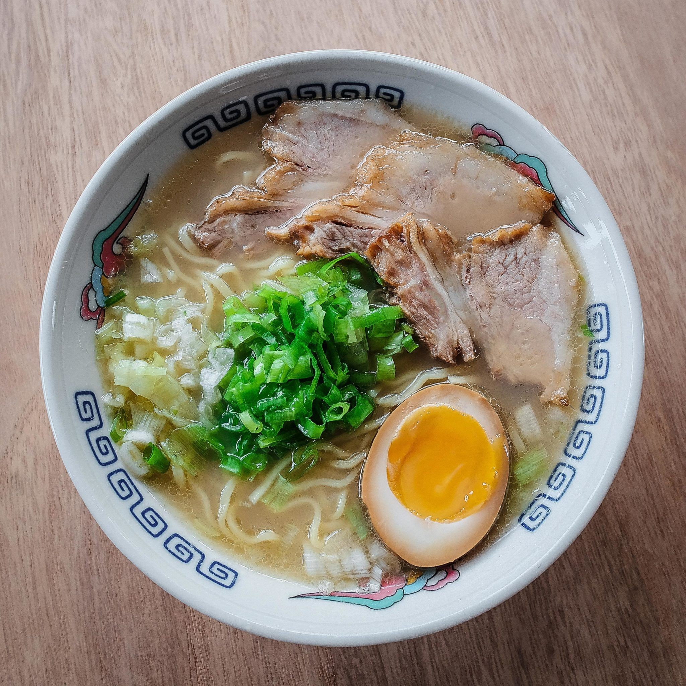

OUR RAMEN
SHOYU
RAMEN
Shoyu ramen is characterized by shoyu or soy sauce-
based broth. It is usually a mixture of soy sauce and either
chicken or pork broth. This is a very classic ramen and you'll
usually find toppings like bamboo shoots, braised pork,
seaweed, and green onions. Noodles in shoyu ramen tend
to be medium-thick wavy noodles.

SHIO
RAMEN
TONKOTSU
RAMEN
MISO
RAMEN